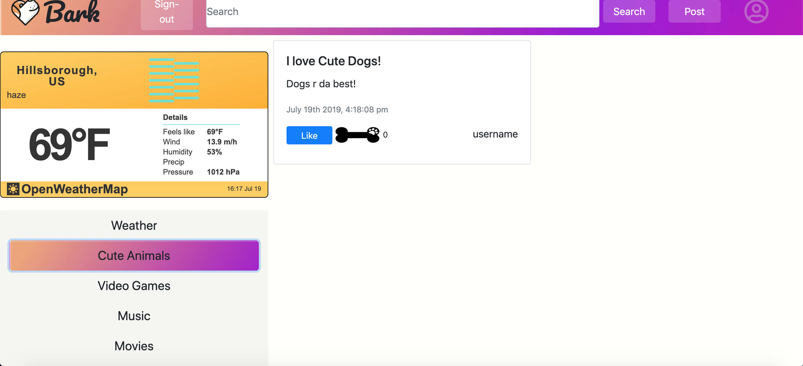
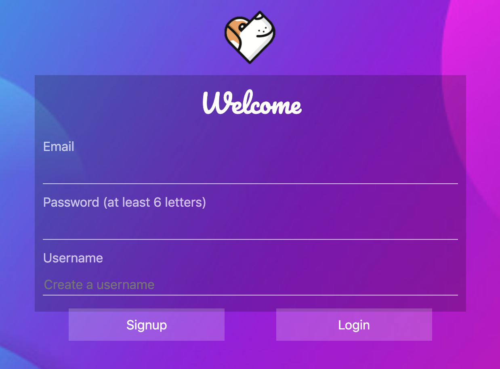
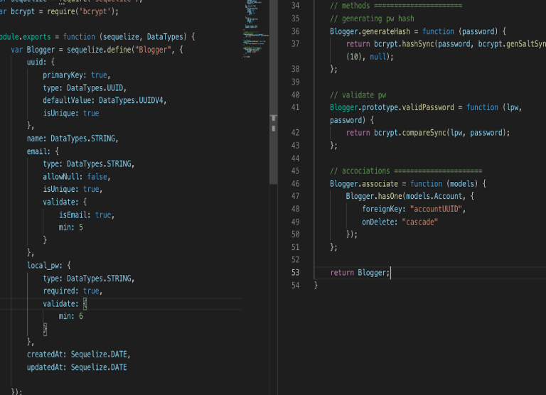
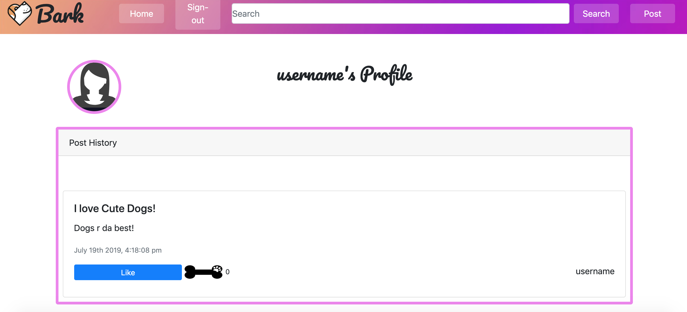

Bark!
Bark! was a collaborative project created as a group by myself, Jake Dudum, Minori Hashimoto, and Adam Lehrer.
Bark! is a location-based social media platform that encourages members of a community within a physcal radius to interact. Users can post, browse, and like anthing from status updates to pictures to articles. Each post is stored dynamically in a SQL database and is the prepended to the main page of the website. What makes Bark unique is that every city has its own feed of posts, and only the only people who are physically in that city can browse and post in that city's feed.
Bark! also features a user authentification system with the Passport npm. Passport utilizes b-crypt, which takes in the user's password, encrypts it, and then stores it in our SQL database so that it is completely safe.
CampDadSource Code
   